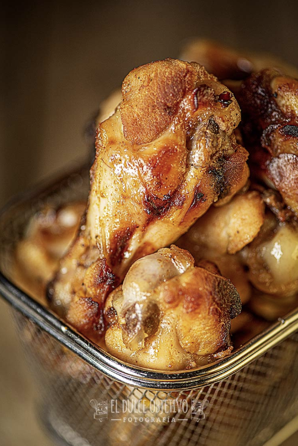

ALITAS DE POLLO CON NARANJA Y MIEL
Ingredientes:
- 800 gr. de alitas de pollo frescas.
- 8 patatas baby.
- 1 naranja.
- 2 cucharadas de miel.
- Sal y pimienta.
- 1 cucharadita de curry en polvo.
- Aceite de oliva virgen extra.
Preparación:
- Revisamos y limpiamos bien las alitas de pollo. Soy de la antigua usanza y me gusta quemarles los posibles restos de plumitas que puedan quedar. Yo lo hago con un soplete.
- Salpimentamos nuestras alitas y la ponemos en un bol.
- Exprimimos media naranja y la ponemos en el bol, junto con la miel y la cucharadita de curry.
- Ponemos un chorrito generoso de aceite de oliva
- Mezclamos muy bien y tapamos para dejar macerar, al menos un par de horas. Cuantas más horas, más sabor, yo incluso las dejo en el frigo desde la noche antes.
- Precalentar el horno con calor arriba y abajo a 230º
- Ponemos las alitas, que ya han macerado, en una bandeja de horno, junto con las patatas baby y con la media naranja que teníamos reservada troceada.
- Metemos la bandeja en el horno, y hornearemos unos 45 minutos, a 230º, dando una vuelta a los ingredientes a mitad del tiempo de horneado.
- Comprobar que están horneadas a nuestro gusto.
- Sacar del horno y servir, abriendo las patatas y poniendo un poco de sal en las mismas.
